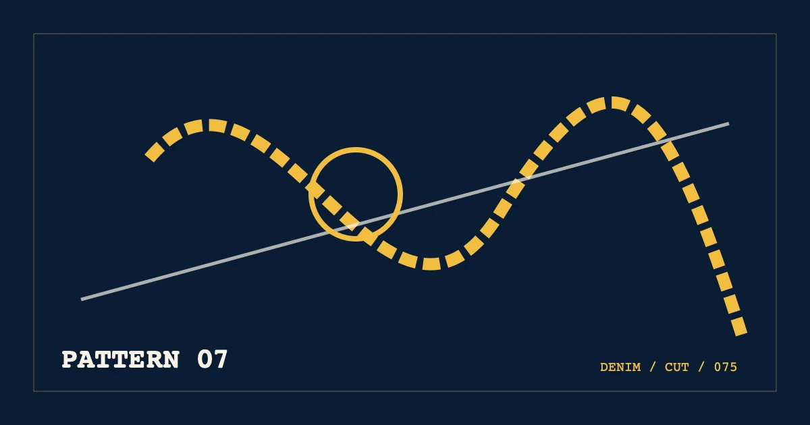

%%A7_EYEBROW%%
%%A7_TITLE%%
%%A7_SUMMARY%%- 编写
- %%AUTHOR_NAME%%
- 发布
- 复核

展开版型目录
%%A7_SECTION_LABEL_1%%
%%A7_H2_1%%
%%A7_BODY_1_A%%
| %%A7_COL_1%% | %%A7_COL_2%% | %%A7_COL_3%% | %%A7_COL_4%% |
|---|---|---|---|
| %%A7_ROW_1_LABEL%% | %%A7_ROW_1_A%% | %%A7_ROW_1_B%% | %%A7_ROW_1_C%% |
| %%A7_ROW_2_LABEL%% | %%A7_ROW_2_A%% | %%A7_ROW_2_B%% | %%A7_ROW_2_C%% |
| %%A7_ROW_3_LABEL%% | %%A7_ROW_3_A%% | %%A7_ROW_3_B%% | %%A7_ROW_3_C%% |
| %%A7_ROW_4_LABEL%% | %%A7_ROW_4_A%% | %%A7_ROW_4_B%% | %%A7_ROW_4_C%% |
%%A7_BODY_1_B%%
%%A7_SECTION_LABEL_2%%
%%A7_H2_2%%
%%A7_BODY_2_A%%
%%A7_BODY_2_B%%
%%A7_SECTION_LABEL_3%%
%%A7_H2_3%%
%%A7_BODY_3_A%%
%%A7_BODY_3_B%%
%%A7_SECTION_LABEL_4%%
%%A7_H2_4%%
%%A7_BODY_4_A%%
%%A7_BODY_4_B%%
%%A7_FAQ_TITLE%%
%%A7_FAQ_Q_1%%
%%A7_FAQ_A_1%%
%%A7_FAQ_Q_2%%
%%A7_FAQ_A_2%%